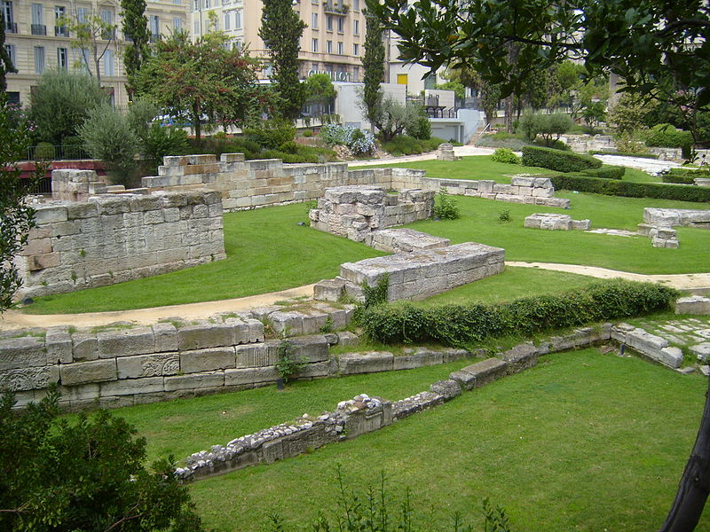

Les espaces verts de la ville
Ancien comme le Jardin de la Colline Puget, premier jardin public créé à Marseille en 1801, site archéologique comme le jardin du musée d’Histoire, cadre idyllique avec vue sur mer comme le parc Valmer, écrin de verdure pour un moment comme le parc Longchamp ou ouverture sur les espaces naturels qui encadrent la ville comme le parc Pastré, les parcs et jardins de Marseille sont à l’image de la ville d’une grande diversité.
Des jardins classés Monuments historiques
Parc du Palais Longchamp
Le Parc Longchamp, s’est constitué au fil du temps, par la stratification des différents projets, imaginés ou réalisés sur le site, depuis le XIXe siècle. Le parc Longchamp, le parc Borély, le jardin de la Magalone et le parc du 26ème centenaire, ont obtenu en 2005 le label « jardin remarquable » décerné par le Ministère de la Culture. Ce fut un Jardin zoologique, de 1854 à 1987. Place Henri Dunant – 13004

Le jardin du Port Antique (Le jardin des Vestiges)
Le site du Port Antique (dénommé Jardin des vestiges à son ouverture au public en 1983) présente les résultats des premières grandes fouilles archéologiques urbaines réalisées en France. Les vestiges, révélés en 1967 sur le chantier de construction du Centre Bourse, sont des témoins historiques majeurs. Le site se structure autour de la voie romaine, des remparts grecs et autour du Port Antique où a été découverte la plus grande épave visible au monde. Cette voie romaine longée par des monuments funéraires pénètre dans la ville par une entrée monumentale.
Des jardins remarquables
Le Parc Borely
Ce jardin de 17 hectares abrite une bastide du XVIIIe siècle (Musée) mise en valeur par un jardin « à la française » et un parc paysager du XIXe siècle. Ses allées sont très prisées des joggers et des promeneurs qui apprécient également de flâner entre les massifs de la roseraie ou de découvrir les espèces rares du jardin botanique. Le plan d’eau, son embarcadère, sa buvette et son restaurant (en attente d’une nouvelle gérance) complètent les multiples attractions du site. Le Parc Borély est aussi un paradis des enfants doté de deux aires de jeux. Allée Borély – 13008

Parc du 26e Centenaire
Parc Urbain de 10 hectares situé en plein coeur de Marseille, sur le site de l’ancienne gare du Prado. On y trouve un terrain de boules, et 2 aires de jeux pour enfants. En 2002 les 4 jardins thématiques ont été aménagés (provençal, oriental, africain et asiatique) symbolisant le brassage des cultures propres à Marseille. Rond-point Zino Francescatti – 13010

Parc de la Magalone
Au cœur de ce jardin niché sur le boulevard Michelet (surface 1,4 hectare), on trouve une des rares bastides du XVIIIe siècle, son propriétaire Messire Raphaël de Magalon, lui donna son nom. Le jardin fut redessiné en 1901 par le paysagiste Edouard André. Véritable jardin baroque, les valeurs et les perspectives, les espaces et les profondeurs prennent tout leur relief en y dessinant des formes géométriques. 245 , Boulevard Michelet – 13009

Le seul et unique Parc National des Calanques !
Connu dans le monde entier pour ses paysages grandioses de falaises calcaires plongeant dans la mer et la grotte Cosquer, le site des Calanques abrite également une biodiversité et un patrimoine culturel exceptionnels. Premier parc national en Europe à la fois terrestre, marin, insulaire et péri-métropolitain, le Parc national des Calanques est un véritable projet de territoire.

Les autres parcs et jardins exceptionnels de la ville de Marseille
Parc de la Buzine
Le château de la Buzine doit sa renommée à Marcel Pagnol. L’ayant acheté avec le projet d’y ouvrir une véritable Cité du cinéma, l’écrivain eut la surprise en arrivant sur place de reconnaître l’édifice qu’il longeait en famille sur le chemin de la Treille, et qui deviendrait – et restera pour toujours – « Le Château de ma mère ». 56 , Traverse De la Buzine – 13011

Jardin du Pharo
Le jardin Emile Duclaux qui entoure le Palais du Pharo, se caractérise par une vue imprenable offerte sur le Vieux-Port et la côte nord de Marseille. Des cheminements, situés en bord de falaise, permettent en effet aux promeneurs de découvrir des points de vue étonnants et le site est idéal pour observer le ballet des ferries quittant le port, véritable invitation au voyage…Lors d’un séjour à Marseille en 1852, Louis Napoléon séduit par le site, émit le souhait de disposer d’une résidence les pieds dans l’eau. Le 15 août 1858 était posée la première pierre du Palais du Pharo. Boulevard Charles Livon – 13007 Marseille

Le Parc Pastré
Entre la Pointe Rouge et la Grotte Rolland, le parc Pastré s’étire sur 112 hectares, jusqu’aux collines de Marseilleveyre. En 1974, la Comtesse Pastré, céda la majeure partie de sa propriété à la ville. Devenu, depuis un immense parc public, ce site est l’un des plus beaux fleurons du patrimoine municipal. Deux étangs, un canal, des aires et terrains de jeux, des sentiers de randonnées séduisent ses nombreux usagers. La partie haute des lieux conserve son caractère sauvage et s’ouvre sur les collines de Marseilleveyre et la découverte des calanques. Toute la zone boisée du parc fait partie du site classé des calanques et en constitue une porte d’entrée pour les amateurs de randonnées. 155, Avenue de Montredon – 13008

Parc Balnéaire du Prado
Avant 1975, Marseille, malgré ses 20 km de façade maritime, ne disposait pas d’aménagements permettant aux baigneurs d’accéder facilement à la mer. Avec la création du parc balnéaire du Prado, 26 hectares d’espaces verts s’harmonisent désormais avec 10 hectares de plages de sable. D’une très grande convivialité, ce parc en front de mer séduit, par ses facettes multiples, en toutes saisons. En outre, un skatepark de renommée internationale (appelé le Bowl) est à la disposition de tous les amateurs de glisse, juste après l’Escale Borely. Avenue Georges Pompidou – 13008